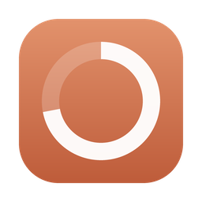
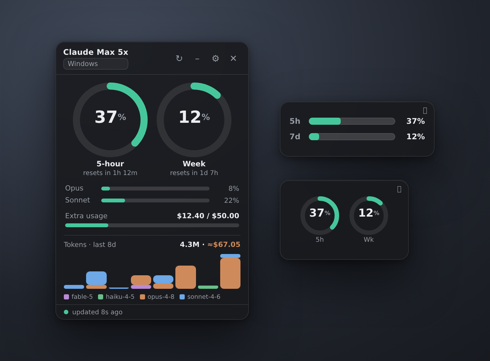

Claude Usage WidgetAn always-on-top widget for your Claude subscription — 5-hour & weekly limits, live reset timers, per-model windows, and local token history with an API-cost estimate.

The same limits you see in Claude Code’s /usage, on your desktop.
5-hour and weekly utilization as ring gauges, with countdowns to each reset.
Opus / Sonnet weekly limits shown separately when your plan has them.
Daily tokens from your local transcripts, with an estimated API-cost value.
Switch between your Windows install and any WSL distro, or add a custom path.
Minimize to a tiny bar or ring view that stays out of your way.
Frameless, draggable from anywhere, and tucks into the system tray.
No accounts, no servers, no telemetry.
.credentials.json locally and uses it only to call api.anthropic.com/api/oauth/usage.Prefer to compile from source?
npm installnpm run tauri buildsrc-tauri/target/release/bundle/nsis/.